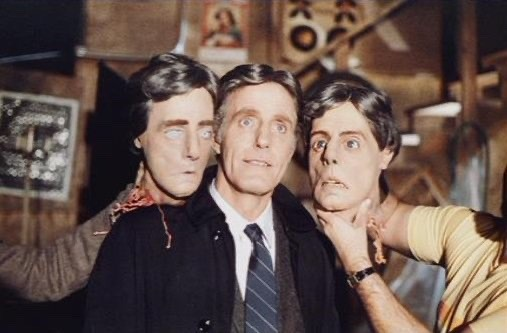
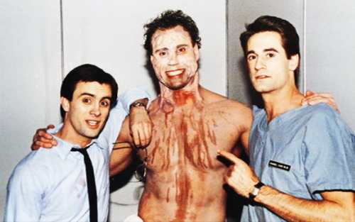
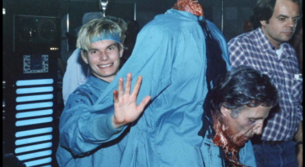
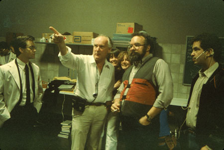

Dr. Hill's actor, David Gale, alongside several fake heads that were used for the film.

Peter Kent (center), Stunt Double for Arnold Schwarzeneger in several of his films, preparing to be a Re-Animated John Doe that attacks the protaganists

A fake body made for Dr. Hill, one of the several used on set

Director Stuart Gorden (center right) and Make up Artist John Naulin (center right) preparing to direct Jeffery Combs (Far left)
for a heavy effects ridden scene